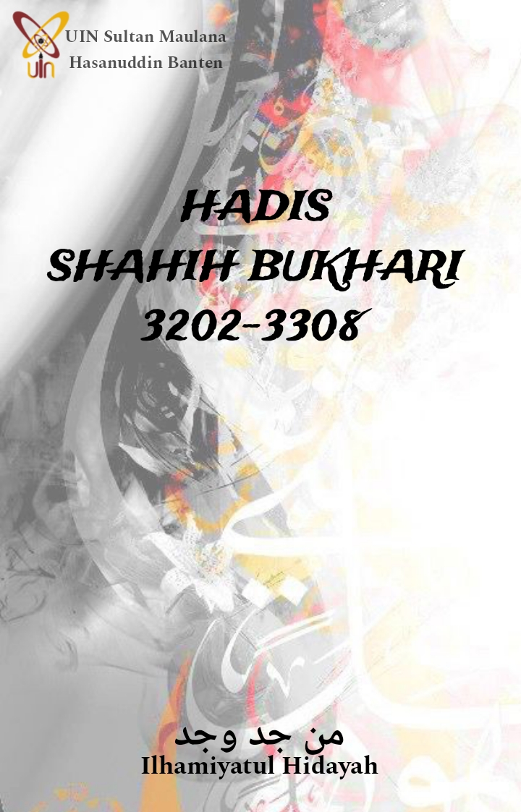

COVER
KATA PENGANTAR
Puji syukur ke hadirat Tuhan Yang Maha Esa. Atas rahmat dan hidayah-Nya Penulis dapat menyusun E-Book tentang kumpulan hadis Bukhori untuk memenuhi tugas yang berjudul “Hadis Shahih Bukhori 3202-3308” dengan tepat waktu.
Tidak lupa Penulis juga mengucapkan terima kasih yang sebesar-besarnya kepada Allah Subhanahu wata’ala yang telah memudahkan Penulis dalam menyusun tugas ini. Juga kepada orang tua yang telah men-support dan mendo’akan Penulis disetiap langkahnya. Penulis pun berterima kasih kepada dosen mata kuliah Studi Hadis Digital yaitu Bapak Muhamad Alif, S.Ag., M.SI. Berkat bantuan beliau yang memberikan ilmunya, sehingga Penulis bisa menyusun E-Book ini. Dan tentu saja berterimakasih kepada diri sendiri yang sudah berjuang semaksimal mungkin dalam menyelesaikan tugas ini.
Penulis juga menyadari bahwa E-Book ini masih jauh dari kata sempurna. Oleh sebab itu, saran dan kritik senantiasa diharapkan demi perbaikan karya Penulis. Semoga melalui E-Book ini bermanfaat bagi siapa pun yang membaca dan membukanya, dan dapat menambah ilmu bagi Penulis juga pembaca serta mengajak pembaca atau siapapun untuk memiliki sifat kritis, idealis dan inovatif.
Serang, 22 Mei 2024 Ilhamiyatul Hidayah |
Daftar Isi
KITAB HADIS-HADIS YANG MERIWAYATKAN TENTANG PARA NABI 1
Firman Allah “Sesungguhnya Ada Beberapa Tanda Kekuasaan Allah pada (Kisah) Yusuf” 1
Firman Allah “Dan (Ingatlah Kisah) Ayyub Ketika dia Menyeru Tuhannya…” 6
Firman Allah “Ceritakanlah (Hai Muhammad kepada Mereka) Kisah Musa di dalam Al-Kitab (Al-Quran) Ini…” 6
Firman Allah "Apakah Telah Sampai Kepadamu Kisah Musa? Ketika Ia Melihat Api..." 7
Firman Allah "Apakah Telah Sampai Kepadamu Kisah Musa?" 7
Firman Allah "Dan Telah Kami Janjikan Kepada Musa (Memberikan Taurat) Sesudah Berlalu Tiga Puluh Malam..." 9
Mereka Menyembah Patung-Patung Mereka 16
Firman Allah "Dan Allah Membuat Istri Firaun Perumpamaan Bagi Orang-orang yang Beriman…." 19
Firman Allah "Sesungguhnya Yunus Benar-benar Salah Seorang Rasul…" 19
Firman Allah "Dan Kami Memberikan Zabur kepada Daud" 21
Sesungguhnya Shalat yang Paling Disukai oleh Allah Adalah Salatnya Nabi Daud 23
Firman Allah "Dan Ingatlah Hamba Kami Daud, yang Memiliki Kekuatan dan Kesabaran..." 23
Firman Allah "Dan Kami Karuniakan kepada Daud, Sulaiman..." 24
Firman Allah "Dan Sesungguhnya Kami Telah Berikan Hikmah Kepada Luqman…." 26
Firman Allah "Penjelasan Rahmat Tuhanmu Kepada Hamba-Nya, Zakariya..." 27
Firman Allah "Dan Ceritakanlah Kepada Maryam di dalam Al-Quran…" 28
Firman Allah "Dan (Ingatlah) Ketika Malaikat Jibril Berkata ‘Hai Maryam, Sesungguhnya Allah Telah Memilih Kamu’…" 28
Firman Allah "Dan (Ingatlah) Ketika Malaikat Berkata, 'Hai Maryam Sesungguhnya Allah Memberimu Kabar Gembira…" 28
Firman Allah “Wahai Ahli Kitab, Janganlah Kamu Melampaui Batas dalam Agama Kamu…” 29
Firman Allah “Dan Ceritakanlah (Kisah) Maryam dalam Al-Quran … 30
Hadits tentang Penyakit Kusta, Kebotakan, dan Buta pada Kalangan Bani Israil 43
KITAB PERILAKU BUDI PEKERTI YANG TERPUJI 58
Firman Allah "Hai Manusia, Sesungguhnya Kami Menciptakan Laki-Laki dan Perempuan dan Kami Jadikan Kalian…" 58